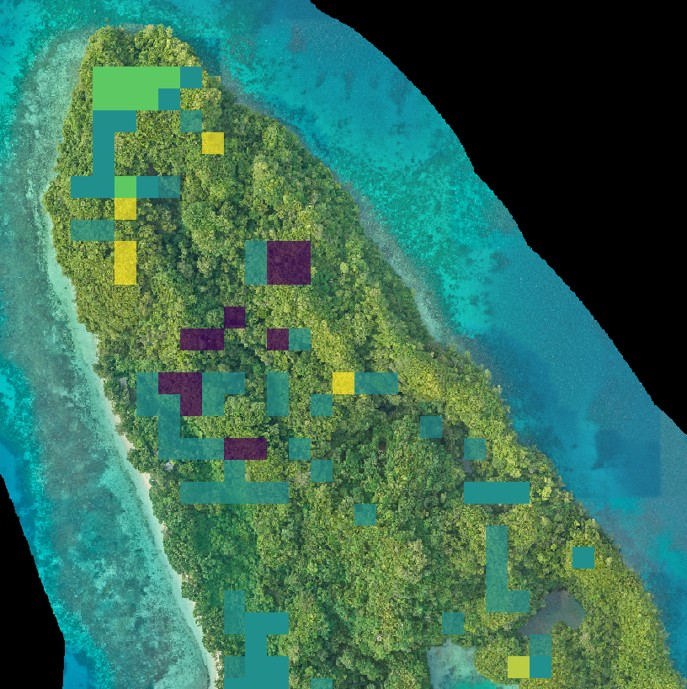

2 Contacts
#Introduction
Islands make up only 6.7% of the Earth’s land surface area, but support approximately 20% of the world’s biodiversity [1]. Island ecosystems evolved in isolation from the continental mainland and are made up of many endemic plant and animal species that are uniquely adapted to island life and found nowhere else in the world. This makes them highly vulnerable to environmental disturbance and introduced threats; as a result, islands support a high density of imperiled species [2].
Protecting island ecosystems is crucial for conserving biodiversity. However, due to their geographic isolation and remoteness, many islands lack the long-term ecological data that is needed to support conservation and restoration initiatives. Without these data, land managers and conservation practitioners cannot monitor ecosystem change caused by the establishment of non-native species, natural resource use, or climate change. They also cannot assess outcomes of targeted conservation actions, such as the removal of an invasive species, planting of native vegetation, or reintroduction of an extirpated species.
Satellites provide us with large-scale, long-term observations of the Earth’s surface. When data collected from ground surveys are sparse, outdated, or unavailable, satellite observations can fill the data gap, helping us better track ecosystem health and function. Island Vital Signs utilizes satellite data to monitor change in island vegetation communities and predict long-term vegetation trends. We provide these data through an online decision-support tool, where end-users can visualize vegetation change on over 50 islands worldwide and download rasters that can be used in mapping applications, including ESRI products (ArcGIS Pro, ArcGIS Collection, etc.), QGIS, and Avenza.

#Methods
4 Islands with available data
| Name | Country | Area sq km | Full time series | Metrics | Modeled eradications | Biome | Realm | Ecoregion |
|---|---|---|---|---|---|---|---|---|
| Aldabra (Grande Terre) | Republic of Seychelles | 114.06 | 1995-2024 | TCC, EVI, NDMI | None | Deserts and xeric shrublands | Afrotropic | Aldabra Island xeric scrub |
| Alofi | Wallis and Futuna | 17.41 | 2000-2024 (tree cover 2014-2024 only) | TCC, EVI, NDMI | None | Tropical and subtropical moist broadleaf forests | Oceania | Fiji tropical moist forests |
| Alto Velo | Dominican Republic | 0.88 | 1985-2024 (tree cover 1987-2024 only) | TCC, EVI, MSAVI2, NDMI | None | Tropical and subtropical dry broadleaf forests | Neotropic | Hispanolan dry forests |
| Amsterdam | French Southern Territories | 57.84 | 2010-2024 (tree cover 2011-2024 only) | TCC, NDVI, NDMI | Cattle (Bos taurus), 2010 | Temperate grasslands, savannas, and shrublands | Afrotropic | Amsterdam-Saint Paul islands temperate grasslands |
| Anacapa | United States | 2.90 | 1985-2024 | TCC, MSAVI2, NDMI | Black rat (Rattus rattus), 2002 | Mediterranean forests, woodlands, and scrub | Nearctic | California coastal sage and chaparral |
| Anatahan | Northern Mariana Islands | 33.99 | 2000-2024 (tree cover 2014-2024 only) | TCC, EVI, NDMI | Pig (Sus scrofa), 2010 | Tropical and subtropical dry broadleaf forests | Oceania | Marianas tropical dry forests |
| Apolima | Samoa | 1.00 | 2000-2024 (tree cover 2013-2024 only) | TCC, EVI, NDMI | None | Tropical and subtropical moist broadleaf forests | Oceania | Samoan tropical moist forests |
| Cocos | Costa Rica | 23.40 | 1985-2024 | EVI, NDMI | None | Tropical and subtropical moist broadleaf forests | Neotropic | Cococs Island moist forests |
| D’Arros | Republic of Seychelles | 1.64 | 2003-2024 (tree cover 2014-2024 only) | TCC, EVI, NDMI | Norway rat (Rattus norvegicus) and cat (Felis catus), 2003 | Tropical and subtropical moist broadleaf forests | Afrotropic | Granitic Seychelles forests |
| Denis | Republic of Seychelles | 1.28 | 2002-2024 | TCC, EVI, NDMI | House mouse (Mus musculus) and black rat (Rattus rattus), 2002 | Tropical and subtropical moist broadleaf forests | Afrotropic | Granitic Seychelles forests |
| Desecheo | United States | 1.48 | 1986-2024 (tree cover 1987-2024 only) | TCC, MSAVI2, NDMI | Black rat (Rattus rattus) and Rhesus macaque (Macaca mulatta), 2016 | Tropical and subtropical dry broadleaf forest | Neotropic | Puerto Rican dry forests |
| Dog | Anguilla | 1.95 | 1985-2024 (tree cover 2000-2024 only) | TCC, MSAVI2, NDMI | Black rat (Rattus rattus), 2012 | Deserts and xeric shrublands | Neotropic | Caribbean shrublands |
| Espanola | Ecuador | 60.04 | 1990-2024 (tree cover 1998-2024 only) | TCC, MSAVI2, NDMI | None | Deserts and xeric shrublands | Neotropic | Galapagos Islands zeric shrub |
| Fanna | Palau | 0.50 | 2000-2024 | EVI, NDMI | None | Tropical and subtropical moist broadleaf forests | Oceania | Palau tropical moist forests |
| Floreana | Ecuador | 172.33 | 1991-2024 (tree cover 1994-2024 only) | TCC, MSAVI2, NDMI | Goat (Capra hircus) and donkey (Equus asinus), 2009 | Deserts and xeric shrublands | Neotropic | Galapagos Islands xeric shrub |
| Great Mercury | New Zealand | 19.98 | 1990-2024 (tree cover 2000-2024 only) | TCC, NDVI, NDMI | Polynesian rat (Rattus exulans), black rat (Rattus rattus), and cat (Felis catus), 2015 | Temperature broadleaf and mixed forests | Australasia | Northland temperate kauri forests |
| Guadalupe | Mexico | 246.24 | 1993-2024 (tree cover 2014-2024 only) | TCC, MSAVI2, NDMI | Dog (Canis familiaris), 2007 | Mediterranean forests, woodlands, and scrub | Nearctic | California coastal sage and chaparral |
| Hawadax | United States | 27.22 | 2000-2024 | NDVI, NDMI | Norway rat (Rattus norvegicus), 2008 | Tundra | Nearctic | Aleutian Islands tundra |
| Kaho’olawe | United States | 115.04 | 2000-2024 | TCC, MSAVI2, NDMI | Goat (Capra hircus), 1992 | Tropical and subtropical grasslands, savannas, and shrublands; tropical and subtropical dry broadleaf forests | Oceania | Hawai’i tropical low shrublands; Hawai’i tropical dry forests |
| Kawau | New Zealand | 21.59 | 1990-2024 (tree cover 2000-2024 only) | TCC, EVI, NDMI | None | Temperate broadleaf and mixed forests | Australasia | Northland temperate kauri forests |
| Late | Tonga | 17.30 | 2002-2024 (tree cover 2014-2024 only) | TCC, EVI, NDMI | None | Tropical and subtropical moist broadleaf forests | Oceania | Tongan tropicla moist forests |
| Le Predour | New Caledonia | 7.93 | 2000-2024 | TCC, EVI, NDMI | Javan rusa (Rusa timorensis) | Tropical and subtropical dry broadleaf forests | Australasia | New Caledonia dry forests |
| Lehua | United States | 1.11 | 2000-2024 | TCC, MSAVI2, NDMI | European rabbit (Oryctolagus cuniculus) | Tropical and subtropical grasslands, savannas, and shrublands | Oceania | Hawai’i tropical low shrublands |
| Lord Howe | Australia | 15.99 | 2000-2024 (tree cover 2014-2024 only) | TCC, EVI, NDMI | None | Tropical and subtropical moist broadleaf forests | Australasia | Lord Howe Island subtropical forests |
| Macquarie | Australia | 129.56 | 2000-2024 | TCC, NDVI, NDMI | European rabbit (Oryctolagus cuniculus) | Tundra | Australasia | Antipodes subantarctic islands tundra |
| Merir | Palau | 0.86 | 1995-2024 | EVI, NDMI | None | Tropical and subtropical moist broadleaf forests | Oceania | Palau tropical moist forests |
| Mohotani | French Polynesia | 12.54 | 2000-2024 (tree cover 2014-2024 only) | TCC, MSAVI2, NDMI | None | Tropical and subtropical moist broadleaf forests | Oceania | Marquesas tropical moist forests |
| Tero | United States | 55.68 | 1985-2024 (tree cover 1987-2024 only) | TCC, MSAVI2, NDMI | None | Tropical and subtropical dry broadleaf forests | Neotropic | Puerto Rican dry forests |
| Ngeruktabel | Palau | 18.34 | 2000-2024 | EVI, NDMI | None | Tropical and subtropical moist broadleaf forests | Oceania | Palau tropical moist forests |
| Nu’uetele | Samoa | 1.08 | 2000-2024 | TCC, EVI, NDMI | None | Tropical and subtropical moist broadleaf forests | Oceania | Samoan tropical moist forests |
| Otouto-jima | Japan | 5.20 | 1985-2024 (tree cover 1987-2024 only) | TCC, NDVI, NDMI | Cat (Felis catus) and goat (Capra hircus), 2010 | Tropical and subtropical moist broadleaf forests | Oceania | Ogasawara subtropical moist forests |
| Palmyra | United States | 2.34 | 2000-2024 | TCC, EVI, NDMI | Black rat (Rattus rattus), 2012; coconut (Cocos nucifera), 2019 | Tropical and subtropical moist broadleaf forests | Oceania | Central Polynesia tropical moist forests |
| Pinta | Ecuador | 60.06 | 1991-2024 (tree cover 1994-2024 only) | TCC, MSAVI2, NDMI | Goat (Capra hircus), 2003 | Desert and xeric shrublands | Neotropic | Galapagos Islands xeric shrub |
| Pinzon | Ecuador | 17.83 | 1991-2024 (tree cover 1994-2024 only) | TCC, MSAVI2, NDMI | Black rat (Rattus rattus), 2012 | Desert and xeric shrublands | Neotropic | Galapagos Islands xeric shrub |
| Redonda | Antigua and Barbuda | 0.63 | 2000-2024 | TCC, MSAVI2, NDMI | Goat (Capra hircus) and black rat (Rattus rattus), 2017 | Deserts and xeric shrublands | Neotropic | Caribbean shrublands |
| Robinson Crusoe | Chile | 47.45 | 2000-2024 | EVI, NDMI | None | Temperate broadleaf and mixed forests | Neotropic | Juan Fernandez Islands temperate forests |
| Santa Barbara | United States | 2.59 | 1985-2024 | TCC, MSAVI2, NDMI | None | Mediterranean forests, woodlands, and scrub | Nearctic | California coastal sage and chaparral |
| Santa Cruz | United States | 250.22 | 1985-2024 | TCC, MSAVI2, NDMI | Sheep (Ovis aries), 2000; pig (Sus scrofa), 2007 | Mediterranean forests, woodlands, and scrub | Nearctic | California coastal sage and chaparral |
| Santa Rosa | United States | 214.77 | 1985-2024 | TCC, MSAVI2, NDMI | Cattle (Bos tarus), 1998; mule deer (Odocoileus hemionus), 2015 | Mediterranean forests, woodlands, and scrub | Nearctic | California coastal sage and chaparral |
| Savana | United States | 0.75 | 1985-2024 (tree cover 1987-2024 only) | TCC, MSAVI2, NDMI | None | Tropical and subtropical dry broadleaf forests | Neotropic | Puerto Rican dry forests |
| Socorro | Mexico | 130.00 | 2000-2024 (tree cover 2017-2024 only) | TCC, MSAVI2, NDMI | Cat (Felis catus), 2017 | Tropical and subtropical dry broadleaf forests | Neotropic | Islas Revillagigedo dry forests |
| Sonsorol | Palau | 1.36 | 2000-2024 | EVI, NDMI | None | Tropical and subtropical moist broadleaf forests | Oceania | Palau tropical moist forests |
| Tetiaroa | French Polynesia | 5.06 | 2000-2024 | TCC, MSAVI2, NDMI | Rodent sp. (Rattus sp.), 2022 | Tropical and subtropical moist broadleaf forests | Oceania | Society Islands tropical moist forests |
| Tofua | Tonga | 53.34 | 2000-2024 (tree cover 2014-2024 only) | TCC, MSAVI2, NDMI | None | Tropical and subtropical moist broadleaf forests | Oceania | Tongan tropical moist forests |
| Trindade | Brazil | 8.21 | 2000-2024 | MSAVI2, NDMI | Goat (Capra hircus), 2005 | Tropical and subtropical moist broadleaf forests | Neotropic | Trindade-Martin Vaz Islands tropical forests |
| Tromelin | French Southern Territories | 0.88 | 2005-2024 | EVI, NDMI | Norway rat (Rattus norvegicus), 2005 | . | Afrotropic | . |
| Ulong | Palau | 1.13 | 2000-2024 (tree cover 2012-2024 only) | TCC, EVI, NDMI | None | Tropical and subtropical moist broadleaf forests | Oceania | Palau tropical moist forests |
#Application Walkthrough
#Use Case Studies: Introduction
#Case Study: Mona Island, Puerto Rico
#Case Study: Pinzón Island, Ecuador
#Case Study: Santa Cruz Island, USA